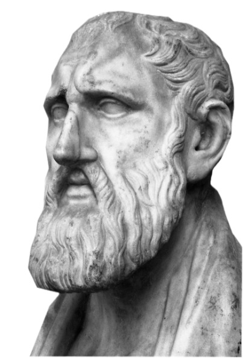
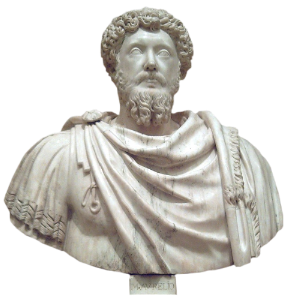

Conhecido como pai de todos os estoicos Zenão de Cítio 333 a.C., 263 a.C. (70 anos), em uma das anedotas
sobre sua vida Zenão é retratado como um rico mercador da cidade de Cítio, no Chipre. Que após sobreviver a
um naufrágio em que perdeu tudo o que tinha, diante desta uma catástrofe que destruiu todos seus bens
materiais e matou seus colegas e funcionários, invés de se render a revolta e tristeza, buscando conforto em
prazeres efêmeros como a bebida ou se colocando em uma posição de vítima Zenão buscou abrigo na
racionalidade para entender como agir diante da imprevisibilidade da vida.

Marco Aurélio foi o último de uma sequência chamada de cinco bons imperadores de Roma
cada um trazendo uma grande contribuição para o império romano, Marco Aurélio foi o imperador regente
durante uma época marcada por guerras e conflitos além da peste antonina que ocorreu em 165 ou 166,
devastando população do império e causando a morte de cinco a dez milhões de pessoas, mesmo cometendo erros
durante seu reinado Marco Aurélio era um exemplo de humildade e bondade além de pregar igualdade ao povo e
se afastar dos luxos da vida focando mais em seu trabalho e servir a população romana, durante seu tempo
como imperador Marco Aurélio enterrou 8 filhos e lidou com conflitos tanto internos quanto externos, mas
mesmo assim não era uma pessoa amargurada tampouco depressivo ou estressado, era retratado com uma figura de
liderança com forte tomada de decisão e intelecto avançado, não demonstrava fraqueza ou nervosismo diante de
seus deveres e vivia sempre em função de trazer soluções para seu império, mesmo sendo uma figura quase
mitológica, e tendo uma religião com ele como uma deidade Marco Aurélio deixou um diário que retrata suas
fraquezas erros e inseguranças além de dicas para si de como se portar e evitar erros no futuro
desmistificando sua figura e o retratando de forma mais humana e íntima no seu livro denominado Meditações.

Epicteto foi um filósofo estoico nascido em Hierápolis, 50 d.C. filho provavelmente de escravos, ele mesmo
era escravo sendo vendido em Roma a um funcionário de Nero: Epafrodito. Epafrodito autorizava Epicteto a
assistir às conferências do estóico Musônio Rufo, grande figura do estoicismo. Pouco depois da morte de Nero
em 68, Epicteto foi liberto sob condições que permanecem desconhecidas. Ele então se dedicou a praticar e
ensinar filosofia estóica. Sua vida é relativamente pouco conhecida e ele não deixou nenhum trabalho escrito
de sua autoria. Seu discípulo, Lúcio Flávio Arriano de Nicomédia, assegurou a transmissão de sua obra
publicando as notas tomadas durante as aulas de seu mestre, em oito livros, metade dos quais já perdidos. De
sua obra se conservam o Encheiridion de Epicteto (também conhecido como Manual de Epicteto) e as Diatribes
(ou Discursos). Seu nome vem do grego, “epiktetos”, que quer dizer “adquirido” ou “comprado”. Seu nome de
nascimento é, infelizmente, desconhecido… Em muitas anedotas de sua vida Epicteto é retratado como uma
figura fraca e frágil com algum tipo de deficiência fruto de abusos físicos que sofreu durante a escravidão
e condição enferma tendo dificuldade nas mais simples tarefas, porém sempre que o assunto se torna sua
personalidade ele é retratado como uma pessoa muito humilde, sabia e acima de tudo feliz e sereno sempre
falando de suas dores sem nervosismo ou tristeza com uma indiferença ao ponto que suas palavras soam como
alguém contando a história de outra pessoa, esse seu modo simples de vida e trajetória sofrida o atribuiu o
título “O mais Estoico entre os Estoicos”.

Lucius Annaeus Sêneca Conhecido como "Sêneca, o Jovem" nasceu por volta de 4 a.C. na atual Espanha, em
Córdoba, sendo criado em Roma. Ele morreu em 65 d.C. Era de uma família muito rica, que foi para Roma quando
ele e seus dois irmãos, Novato e Mela, eram crianças. Talvez por motivos de saúde. Sêneca transferiu-se, por
volta de 20 d.C., para Alexandria, no Egito, de onde retornou em 31. Por Calígula, foi condenado à morte,
mas conseguiu ter a pena relevada, possivelmente por alegarem que sua doença pulmonar o levaria ao
falecimento em breve. Com a morte de Calígula, é acusado por Messalina, a mulher do imperador Cláudio. Por
intervenção do próprio imperador, a pena foi o exílio — e não a morte. O afastamento de Sêneca durou oito
anos, na ilha de Córsega. Após a morte de Messalina (48 d.C.), a nova esposa de Cláudio, sua sobrinha
Agripina, possibilitou o retorno de Sêneca, em 49 d.C., e o instituiu como preceptor de seu filho Nero,
então com 12 anos. Em 54, com a morte de Cláudio, Nero torna-se o imperador e Sêneca tornou-se o seu
conselheiro. No início de 65, Sêneca foi apontado entre os participantes de uma trama para derrubar Nero.
Condenado à pena capital, morreu em 19 de abril bebendo vêneno em sua casa. Uma das muitas facetas mais interessantes de Sêneca é que
ele soube navegar em diversas áreas, e levar sua escola filosófica para os diferentes âmbitos de sua vida.
Sêneca participou ativamente da vida política do Império Romano, tendo uma existência movimentada e
produtiva em diversas áreas. Sêneca foi um dramaturgo de sucesso, uma das pessoas mais ricas de Roma, "Banqueiro",
estadista famoso e conselheiro do imperador. Na escrita, foi prolífico, escrevendo cartas, tratados, poemas
e peças de teatro. Com todas essas frentes e interesses, o filósofo buscava a razão e a harmonia entre o que
aprendia e como agia. Ele não estudava filosofia de uma maneira desconectada da realidade. Muito pelo
contrário, como uma marca da escola estoica, Sêneca participava da vida pública, testando o Estoicismo no
seu dia a dia. Além disso, teve que enfrentar o exílio, problemas de saúde e pôr fim a condenação por Nero à
morte por suicídio. Filosofia e vida assim eram uma coisa só, como deve ser, e ele a seguiu com seus erros e
acertos, mas de toda forma tornando-se referências e autores mais fortes do Estoicismo.